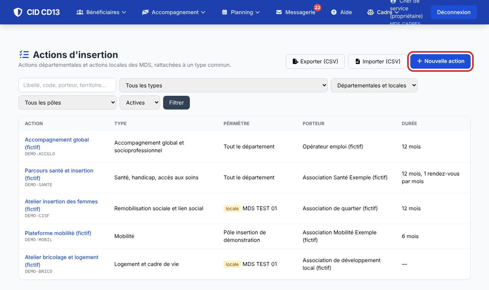
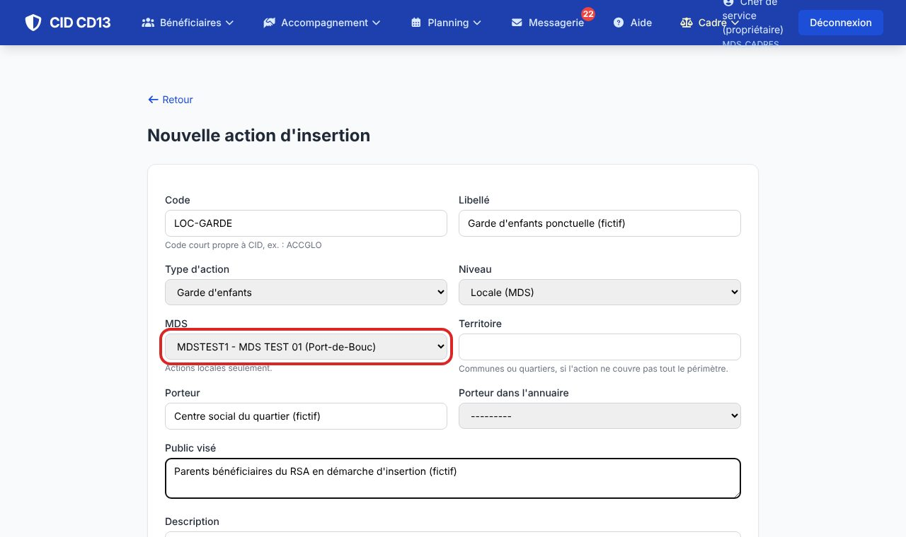
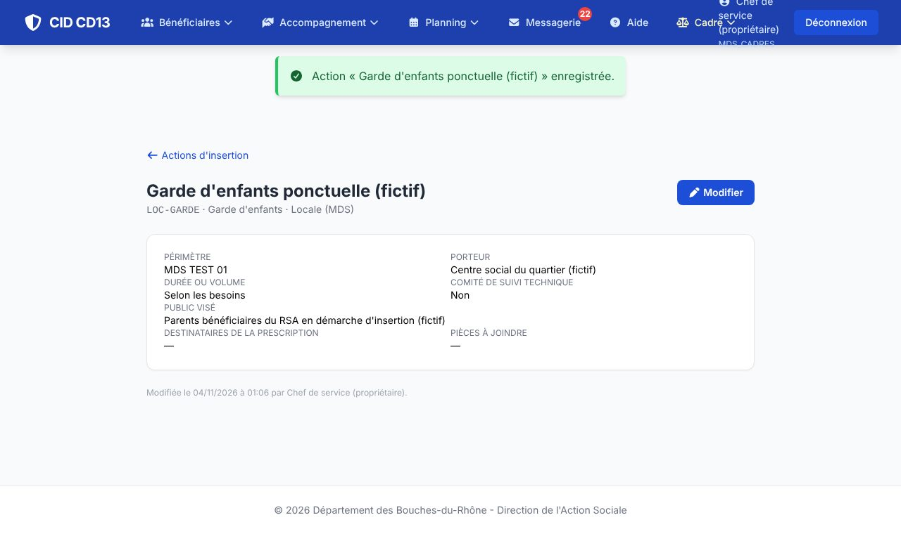

1Nouvelle action

- Dans la liste des actions, cliquez sur Nouvelle action.
2Décrire l'action

- Code court propre à CID (ex. LOC-GARDE) et libellé.
- Type d'action : obligatoire, il range l'action dans la typologie commune.
- Le niveau est Locale (MDS) ; choisissez la MDS si vous en avez plusieurs.
- Porteur (ou sa fiche dans l'annuaire des partenaires), territoire, public visé, durée, destinataires de la prescription et pièces à joindre (une par ligne), comité de suivi technique.
3Enregistrer

- Cliquez sur Enregistrer. Le bouton Modifier de la fiche permet de la compléter ou de la passer inactive.
Bon à savoir
- Les actions départementales sont gérées par les pôles insertion (et l'administration).
Et ensuite ?
Cliquez sur une image pour l'agrandir. Le cadre rouge montre où cliquer ou quoi remplir. Toutes les données affichées sont fictives.